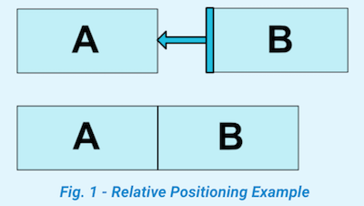
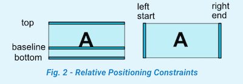
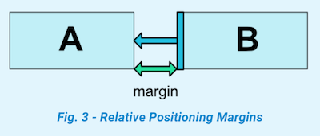
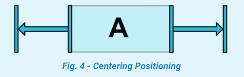
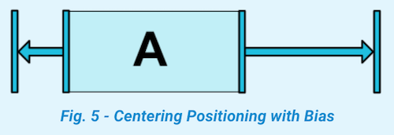
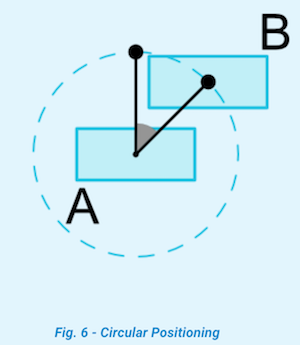
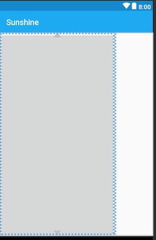
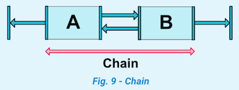
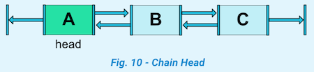
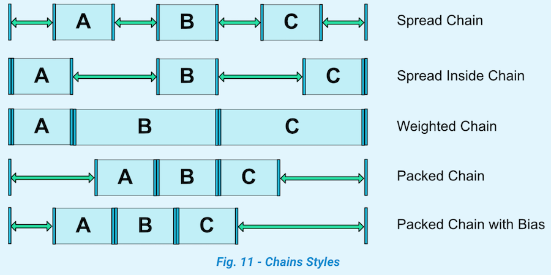

一文看懂ConstraintLayout的用法
ConstraintLayout 相对于RelativeLayout来说性能更好，布局上也更加灵活。在最新的Google Android开发文档中是推荐使用ConstraintLayout的，下面来看看具体用法。
0x00 相对位置(Relative positioning)
这个比较简单，看图解释，假设控件B要放在控件A的右侧，可以使用layout_constraintLeft_toRightOf属性。

<Button android:id="@+id/buttonA" ... />
<Button android:id="@+id/buttonB" ...
app:layout_constraintLeft_toRightOf="@+id/buttonA" />
看图2可以了解控件约束属性代表的含义。

类似相对位置的约束属性有：
layout_constraintLeft_toLeftOflayout_constraintLeft_toRightOflayout_constraintRight_toLeftOflayout_constraintRight_toRightOflayout_constraintTop_toTopOflayout_constraintTop_toBottomOflayout_constraintBottom_toTopOflayout_constraintBottom_toBottomOflayout_constraintBaseline_toBaselineOflayout_constraintStart_toEndOflayout_constraintStart_toStartOflayout_constraintEnd_toStartOflayout_constraintEnd_toEndOf
0x01 外边距(Margins)
这个属性也好理解，看图3

可以通过以下属性设置一个控件相对另一个控件的外边距：
android:layout_marginStartandroid:layout_marginEndandroid:layout_marginLeftandroid:layout_marginTopandroid:layout_marginRightandroid:layout_marginBottom
属性值必须是大于或者等于0。
接一下看一个RelativeLayout 没有的属性：
0x02 Margins when connected to a GONE widget
当一个相对的控件隐藏时，ConstraintLayout也可以设置一个不同的边距：
layout_goneMarginStartlayout_goneMarginEndlayout_goneMarginLeftlayout_goneMarginToplayout_goneMarginRightlayout_goneMarginBottom
具体的栗子下面会讲到。
0x03 Centering positioning and bias
居中以及设置偏差

<android.support.constraint.ConstraintLayout ...>
<Button android:id="@+id/button" ...
app:layout_constraintLeft_toLeftOf="parent"
app:layout_constraintRight_toRightOf="parent"/>
</android.support.constraint.ConstraintLayout>
还可以设置bias属性，表示子控件相对父控件的位置倾向，可以使用属性：
layout_constraintHorizontal_biaslayout_constraintVertical_bias

假设设置控件A相对父控件横向偏差是30%：
<android.support.constraint.ConstraintLayout ...>
<Button android:id="@+id/button" ...
app:layout_constraintHorizontal_bias="0.3"
app:layout_constraintLeft_toLeftOf="parent"
app:layout_constraintRight_toRightOf="parent"/>
</android.support.constraint.ConstraintLayout>
0x04 弧形定位(Circular positioning)
这个属性是在1.1版本添加的。

可以使用属性有：
layout_constraintCircle: 相对控件的idlayout_constraintCircleRadius: 相对控件中心的距离，也就是圆的半径layout_constraintCircleAngle: 相对夹角 (从 0 ~ 360度)
例如，图6代码示例
<Button android:id="@+id/buttonA" ... />
<Button android:id="@+id/buttonB" ...
app:layout_constraintCircle="@+id/buttonA"
app:layout_constraintCircleRadius="100dp"
app:layout_constraintCircleAngle="45" />
0x05 Visibility behavior

一般情况下，设置GONE属性后，控件就不会出现在布局中了，B控件对A控件的margin属性也就没有作用了。
但是ConstraintLayout 能对已经设置GONE属性的控件进行特殊处理。当A控件设置GONE之后，A控件相当于变成了一个点，B控件相对于对A的约束仍然是起作用的。图7的代码示例，A控件设置成了GONE,当B控件的margin属性还是有作用的。
<android.support.constraint.ConstraintLayout ...>
<Button
android:id="@+id/buttonA"
android:layout_width="wrap_content"
android:layout_height="wrap_content"
android:text="button A"
android:visibility="gone"
app:layout_constraintLeft_toLeftOf="parent" />
<!--当A控件设置Gone之后，B控件的margin属性是起作用的，即左边距还是30dp-->
<Button
android:id="@+id/buttonB"
android:layout_width="wrap_content"
android:layout_height="wrap_content"
android:layout_margin="30dp"
android:text="button B"
app:layout_constraintLeft_toRightOf="@+id/buttonA" />
</android.support.constraint.ConstraintLayout>
然而有时候，B控件是不希望相对于隐藏控件的属性还起作用。这时候可以用到上面0x02提到的goneMargin属性。
<android.support.constraint.ConstraintLayout ...>
<Button
android:id="@+id/buttonA"
android:layout_width="wrap_content"
android:layout_height="wrap_content"
android:text="button A"
android:visibility="gone"
app:layout_constraintLeft_toLeftOf="parent" />
<!--当A控件设置Gone之后，希望B控件的左边距为0dp，那么可以设置layout_goneMarginLeft属性-->
<Button
android:id="@+id/buttonB"
android:layout_width="wrap_content"
android:layout_height="wrap_content"
android:layout_margin="30dp"
android:text="button B"
app:layout_goneMarginLeft="0dp"
app:layout_constraintLeft_toRightOf="@+id/buttonA" />
</android.support.constraint.ConstraintLayout>
0x06 尺寸约束(Dimensions constraints)
设置最小或最大尺寸
可以使用以下属性：
android:minWidthandroid:minHeightandroid:maxWidthandroid:maxHeight
当ConstraintLayout宽高设置为wrap_content时，以上属性可以起作用。
设置百分比布局
当ConstraintLayout 子布局的宽或高设置为0dp时，可以对宽或高设置百分比，例如设置一个按钮的宽是屏幕宽度的30%，那么可以这样处理：
<android.support.constraint.ConstraintLayout ...>
<!--按钮width属性设置为0dp,然后需要指定layout_constraintWidth_default，以及layout_constraintWidth_percent两个属性-->
<Button
android:id="@+id/buttonB"
android:layout_width="0dp"
android:layout_height="wrap_content"
android:text="button B"
app:layout_constraintLeft_toLeftOf="parent"
app:layout_constraintWidth_default="percent"
app:layout_constraintWidth_percent="0.3" />
</android.support.constraint.ConstraintLayout>
设置宽度百分比布局：
layout_width或者layout_height设置为0dp- 设置
layout_constraintWidth_default="percent"或者layout_constraintHeight_default="percent" - 通过
layout_constraintWidth_percent或者layout_constraintHeight_percent指定百分比
设置宽高比例
当layout_width或者layout_height设置为0dp时，还可以通过layout_constraintDimensionRatio设置宽高比例。该比例表示width:height的值。
<Button
android:layout_width="wrap_content"
android:layout_height="0dp"
app:layout_constraintDimensionRatio="1:1" />
当layout_width与layout_height都设置为0dp时，通过app:layout_constraintDimensionRatio 指定宽高的比例。这时控件的宽高将按照该比例相对于父布局的大小设置宽高。
<android.support.constraint.ConstraintLayout ...>
<Button
android:layout_width="0dp"
android:layout_height="0dp"
app:layout_constraintBottom_toBottomOf="parent"
app:layout_constraintDimensionRatio="h,16:9"
app:layout_constraintTop_toTopOf="parent" />
</android.support.constraint.ConstraintLayout>
h,16:9的含义是h:w=16:9 也可设置w,9:16效果是一样的。

0x07 Chains
在横轴或或者数轴上的控件相互约束时，可以组成一个链式约束。

图9中，A控件与B控件相互约束，这就是一个简单的链式约束。
链头

Chain Style
可以通过layout_constraintHorizontal_chainStyle或layout_constraintVertical_chainStyle设置链式控件的样式。这个属性有点像LinearLayout中的weight 属性平分布局。
CHAIN_SPREAD- Weighted chain
CHAIN_SPREAD_INSIDECHAIN_PACKED

设置权重
layout_constraintHorizontal_weightlayout_constraintVertical_weight
0x08 引用
https://developer.android.com/reference/android/support/constraint/ConstraintLayout